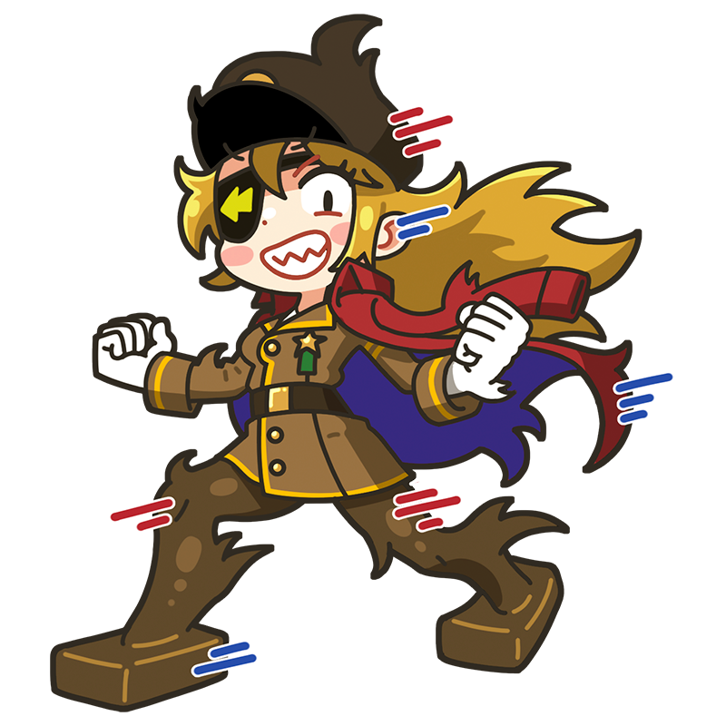

ぎゃはははーっ！ 俺のスピードに、
ついてこれるヤツはいるかッ⁉
ボッチョーニ
来るべき未来を支配するのは
力を持つ者だけである！
イタリア未来派を代表するミューズ。「エネルギー・速度・破壊」を崇拝する過激思想の持ち主。彼女にとって、力強さだけが価値観の全てである。軍用自転車を全速力でかっ飛ばすことに喜びを感じている。
様式
未来派
出身国
イタリア
代表作
- 『立ち上がる都市』
- 『空間における連続性の唯一の形態』
- 『笑い』など
ボッチョーニといえばこの一枚！
空間における連続性の
唯一の形態
歩く人間という動的なモチーフを、静止した彫刻によって表現しようとした作品。未来派が崇拝した「物体が動く姿」を流線型の形で見事に表現している。もともと石膏で作られていたが、ボッチョーニの死後にブロンズ鋳造でいくつかの複製が作られた。イタリア・ユーロ硬貨のデザインに採用されるなど広く愛されている。
制作年
1913年
技法・材質
石膏、ブロンズ
寸法
121.3 cm x 88.9 cm x 40 cm
所蔵
サン・パウロ大学現代美術館
(ブラジル)など
作品画像出典: https://commons.wikimedia.org/wiki/File:%27Unique_Forms_of_Continuity_in_Space%27,_1913_bronze_by_Umberto_Boccioni.jpg
ボッチョーニってどんな芸術家？
ウンベルト・ボッチョーニ
イタリア未来派を代表する芸術家の一人。キャリア初期には商業イラストレーターとして活動していたが、詩人マリネッティが発表した「未来派宣言」に呼応して運動に参加。絵画や彫刻を通じて、速度、機械、エネルギー、武力を賛美する未来派の思想を体現した。第一次世界大戦の勃発にともない軍隊に入隊したが、訓練中の落馬事故により33歳で死去。短い生涯ながら、未来派を象徴する重要な作品を数多く残した。
フルネーム
Umberto Boccioni
誕生
1882年10月19日
死没
1916年8月17日(33歳没)